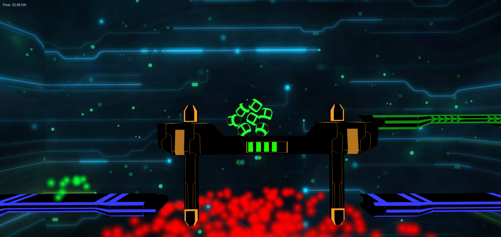

Blob
This is a small game I made with another student for a university course focusing on interaction methods for games. It was developed using Unity.
Gameplay
For the controls we had to use a custom controller which had various sliders, buttons and an accelerometer. We used the accelerometer to directly rotate the level. The objective is to move a blob out of spheres through the level. The blob will react physically correct to the changes to the level.
Using the sliders on the controller the player can directly change the forces between the blob parts. This makes it possible to go through certain narrow obstacles by reducing the force. It is also easier to control the blob by increasing the force between the blob parts.
Going through the level there are some dangerous areas which have to be avoided. Otherwise the parts of the blob in contact with these areas will be destroyed. In other parts of the level it is possible to collect more blob parts. Some areas are locked until the blob has a certain size. The overall goal is to reach the end of the level with as much blob parts as possible.
What I worked on
I did all of the programming for the game. I also created the most of the 3D Models and was responsible for the general art style.